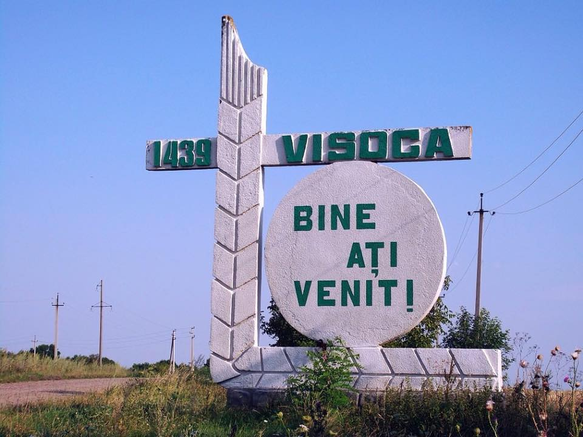
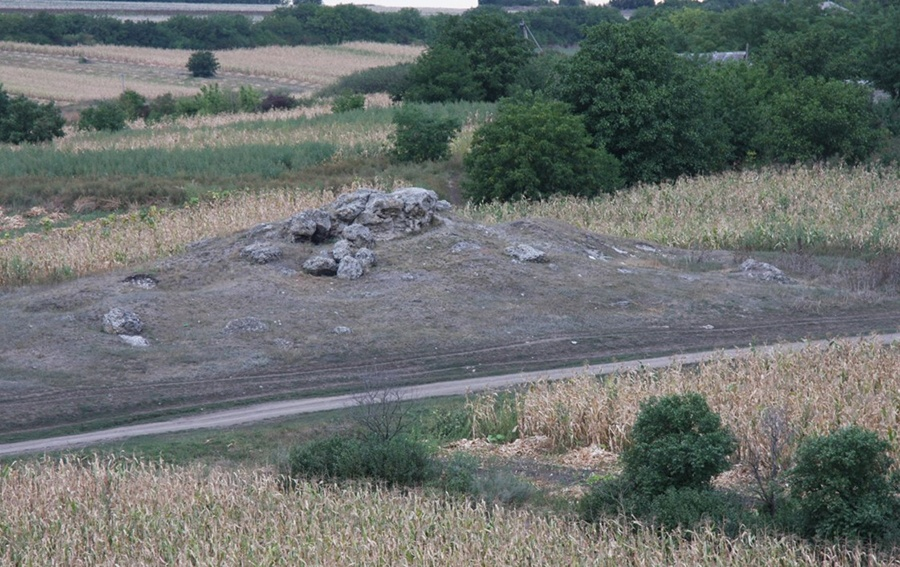
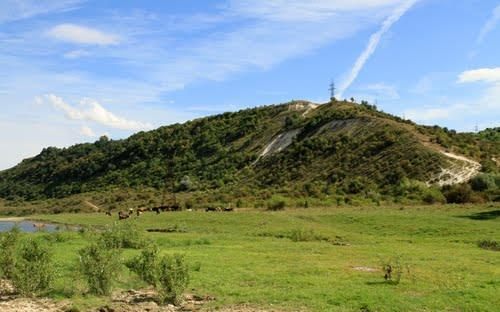
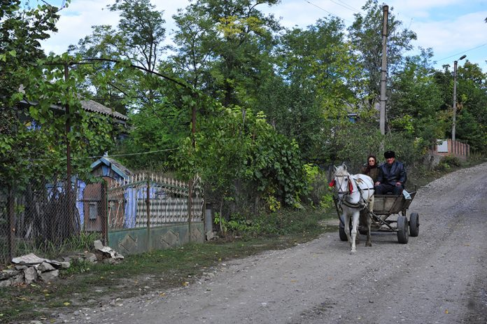

Prezentare generală
Numele satului
Numele topic Visoca apare în cartea domnească de la Ștefan al II-lea,
fiul lui Alexandru cel Bun, emisă la 10 mai 1439. Însă, documentar,
satul Visoca este atestat la 13 iunie 1599.
Nu există vreun document care s-ar referi direct la numele satului Visoca.
”Dealul înalt” — acesta a fost numele inițial al satului Visoca, însă toponimul
a fost mai întâi slavizat și ortografiat ”Visokii deal”, Există și o altă variantă la numele satului Visoca.
Adică, denumirea satului [moșiei] se trage de la numele de botez al unei persoane concrete cu numele Visoca
care, desigur, a stăpânit acest pământ. Cuvântul ”Visoca” constituie un derivat al numelui de botez străvechi,
traco-dac, ”Vis[u]”. Etimonul cuvântului ”Visoca” a fost ”Vis”. Către 1594, în patrimoniul onomastic al
strămoșilor noștri mai persista [pre]numele de botez ”Visul”. Conform lui N. A. Petrovschi, autorul lucrării
”Словарь русских личных имён”, numele ”Vis” în limba latină înseamnă ”forță”. Satul Visoca este situat în
Valea Fetei, între s. Crișcăuți, Teleșeuca, Dărcăuți și Cotova, lângă râul Căinari, la 43 km nord-vest de
Soroca și 30 km până la gara Vălcineț.
La nord-vest de sat, în Valea Curecheriei [zisă și Valea Sărăturii], se
ridică delușorul compus din calcar, denumit Varnița. Piatra din cariera de acolo este un valoros material de
construcție. Spre est de sat, în direcția Nistrului, se ridică Dealul Geamăna, având înălțimea de 320 m
deasupra nivelului mării. La poalele Geamănei începe Valea Hârtopului. Unindu-se cu valea care traversează
satul dinspre nord, ele formează Valea Fetei, ce se deschide în Valea Căinar, la Cotova. Pe fundul ei curge
pârăul Fetei, care în ultimii ani a secat din cauza secetei cumplite. La sud, satul trece într-o vâlcică, zisă
Valea Pietrelor, deoarece sunt niște mormane de pietre mari, care își dezgolesc frunțile încă de pe timpuri
sarmatiene.
Mai multe aflați aici
Descrierea așezării geografice
Visoca este un sat din raionul Soroca, Republica Moldova. Este amplasat la 40 km de la centrul raional Soroca.
La sud de sat, sunt amplasate movile recifale, arie protejată din categoria monumentelor naturii de tip
geologic sau paleontologic.
La nord-vest de sat se ridică delușorul
compus din calcar, denumit Varnița. Piatra din cariera de
acolo este un valoros material de construcție.
Spre est de sat,
în direcția Nistrului, se ridică Dealul Geamăna, având înălțimea
de 320 m deasupra nivelului mării. La poalele Geamănei începe Valea Hârtopului.
Unindu-se cu valea care traversează satul dinspre nord, ele formează Valea Fetei,
ce se deschide în Valea Căinar, la Cotova.
 
La cumpăna veacurilor
Ce prezenta satul Visoca la finele secolului XIX și începutul sec. XX? Vom răspunde în mod cronologic: 1878. La Visoca a fost stabilit punctul de adunare a soldaților și ofițerilor inferiori aflați în rezervă pentru a merge de aici la punctele de mobilizare. 1889. La Visoca erau 1624 de locuitori, s-au născut 74 de copii, au decedat 34 persoane. 1890. În Visoca erau 325 de gospodării, cu 843 de persoane de sex masculin și 722 — de sex feminin. S-au născut 45 de băieți și 42 de fete. Au decedat 55 de bărbați și 65 de femei. 1896. An secetos. Țăranii au luat de la zemstvă un împrumut de 2.608 puduri de porumb pentru 1160 de suflete. 1897. Se efectuează recensământul general al populației din Imperiul Rus. La Visoca au fost înregistrați 916 bărbați, 863 femei, în total 1.779 de suflete, dintre care 1.733 erau de religie creștină ortodoxă. 1889. Populația satului este în creștere: 974 de bărbați și 885 de femei. Punctul medical se află la Zgurița. Conform confesiunilor: ortodocși — 952 de bărbați și 862 de femei, catolici — 4 bărbați și 3 femei, iudaici — 18 bărbați și 20 de femei. Conform stărilor sociale: nobili — 9 bărbați și 8 femei, odnodvorți — 7 bărbați și 3 femei, mic burghezi — 23 de bărbați și 20 de femei, țărani — 933 de bărbați și 850 de femei. În sat erau 6 comercianți, 3 meșteșugari și 8 funcționari.
